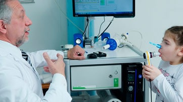

NEUMONOLOGÍA
La Neumonología es la especialidad médica que se ocupa de la prevención, estudio, diagnóstico, tratamiento y rehabilitación de las enfermedades del aparato respiratorio, ocupándose de las afecciones pulmonares, pleurales y mediastínicas. En referencia a las enfermedades respiratorias más importantes que trata la Neumonología es posible mencionar: asma, neumonía, EPOC (enfermedad pulmonar obstructiva crónica), cáncer de pulmón, SAOS (Síndrome de apnea del sueño), entre otras.
¿Para qué sirve la Neumonología?
Esta rama de la medicina sirve para estudiar y tratar las enfermedades que afectan tanto al aparato respiratorio como al tórax. El médico encargado de ejercer esta especialidad es el >bneumólogo.
¿Cuando se recomienda acudir a un neumonólogo?
La visita a un neumólogo es recomendada ante la presencia de los siguientes síntomas: Tos persistente, dificultad para respirar o ruidos en el pecho. Estos inconvenientes pueden ser una alerta asociada a un problema respiratorio y atenderlos con anticipación es una manera eficaz de evitar el desarrollo de una enfermedad respiratoria.
Sacar turno